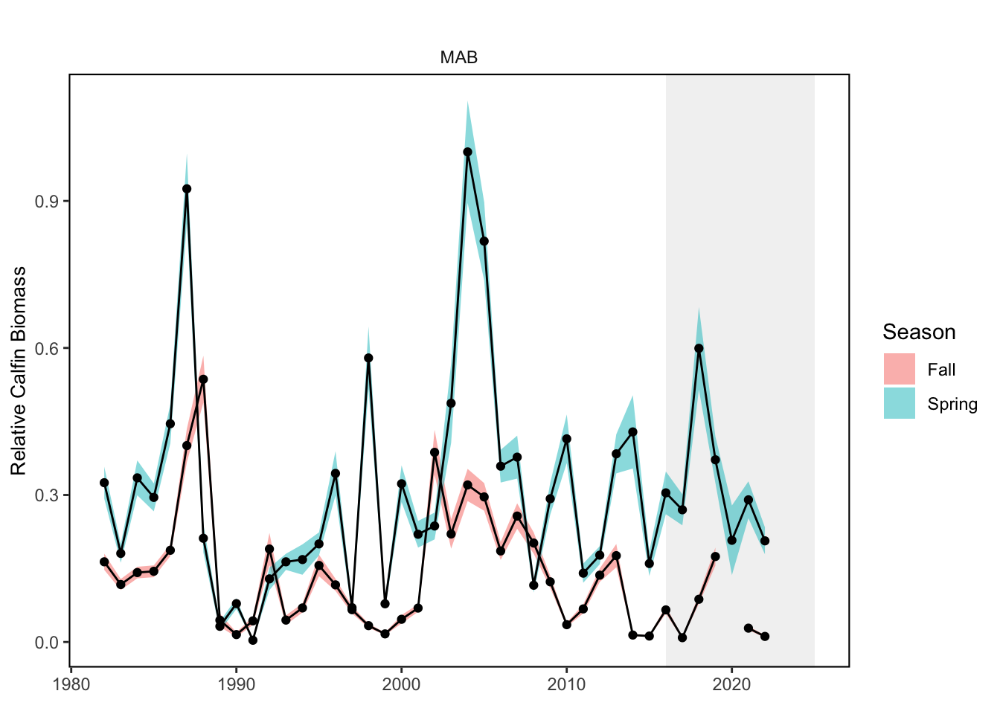
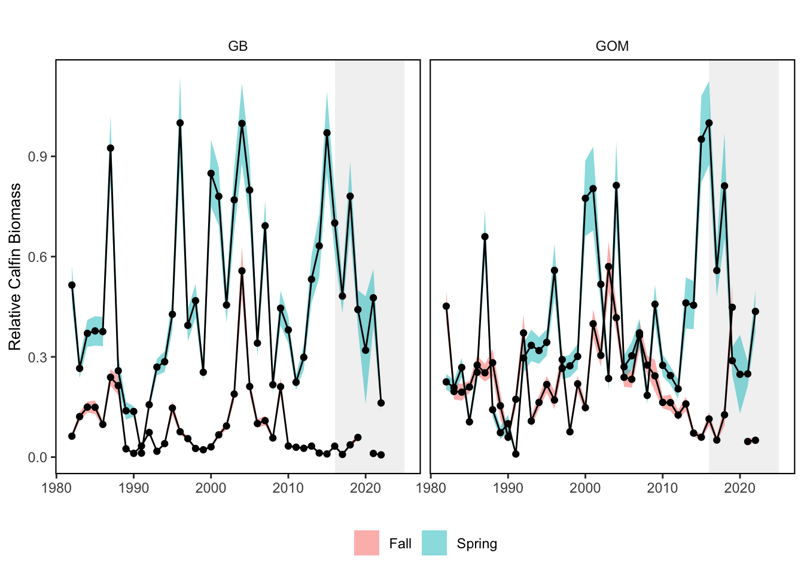
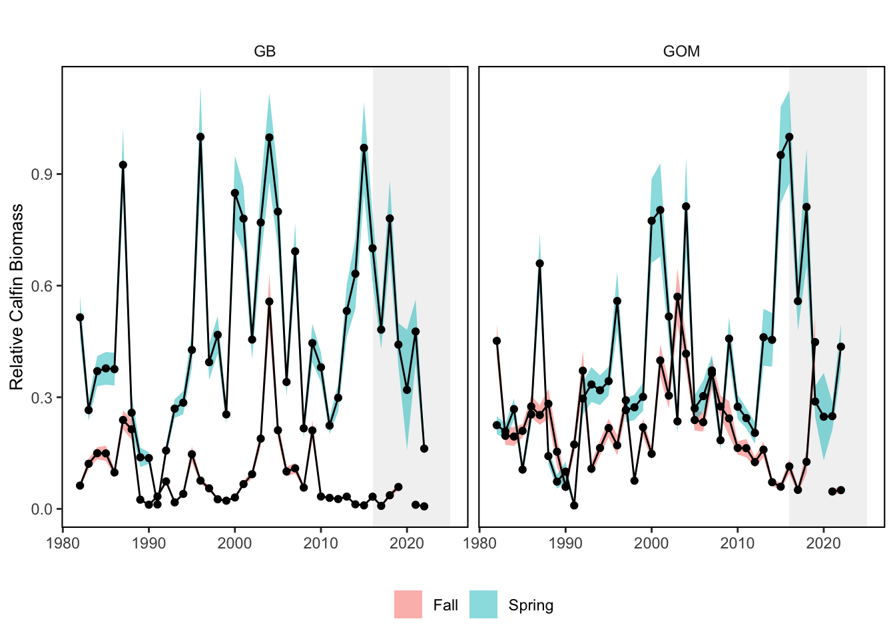
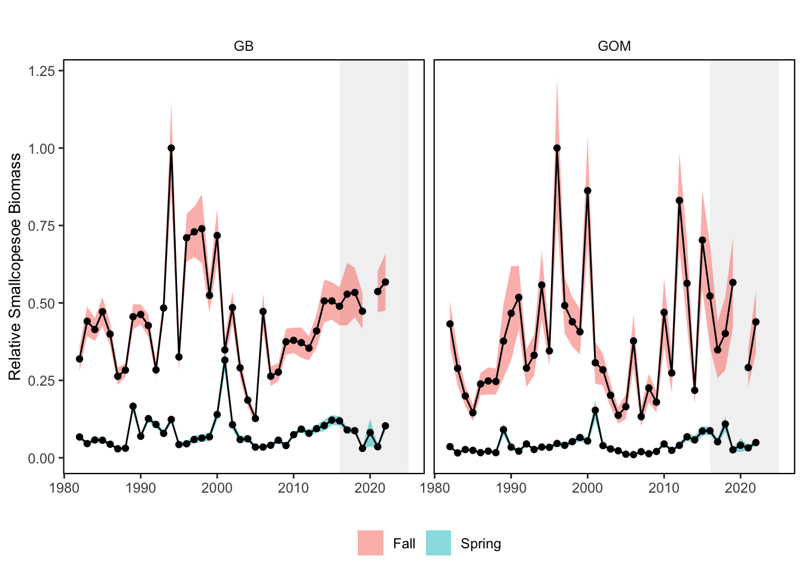
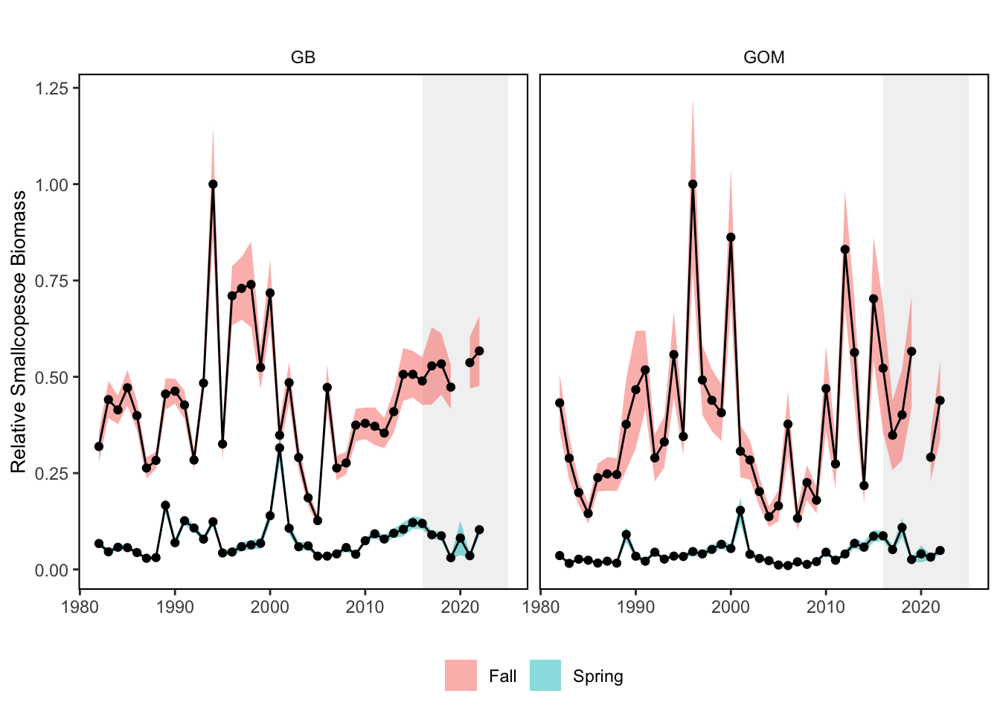
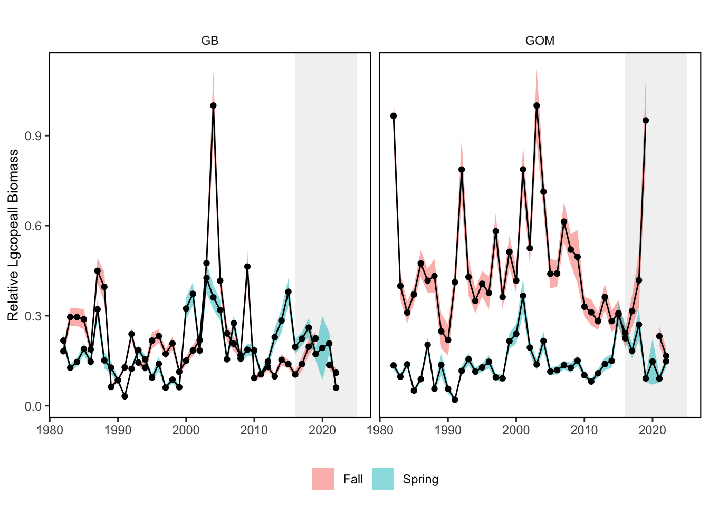
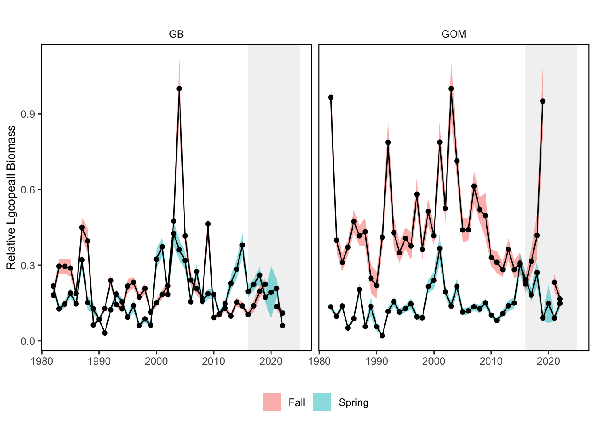

SMART Indicator Report: Zooplankton Indices
1 Descriptive Section
1.2 Indicator name
Zooplankton Indices
Includes variable(s): Fall Calfin Abundance Index Estimate, Fall Calfin Abundance Index Estimate SE, Fall Calfin Eastward Center of Gravity, Fall Calfin Eastward Center of Gravity SE, Fall Calfin Northward Center of Gravity, Fall Calfin Northward Center of Gravity SE, Fall Euph Abundance Index Estimate, Fall Euph Abundance Index Estimate SE, Fall Euph Eastward Center of Gravity, Fall Euph Eastward Center of Gravity SE, Fall Euph Northward Center of Gravity, Fall Euph Northward Center of Gravity SE, Fall Lgcopeall Abundance Index Estimate, Fall Lgcopeall Abundance Index Estimate SE, Fall Lgcopeall Eastward Center of Gravity, Fall Lgcopeall Eastward Center of Gravity SE, Fall Lgcopeall Northward Center of Gravity, Fall Lgcopeall Northward Center of Gravity SE, Fall Smallcopeall Abundance Index Estimate, Fall Smallcopeall Abundance Index Estimate SE, Fall Smallcopeall Eastward Center of Gravity, Fall Smallcopeall Eastward Center of Gravity SE, Fall Smallcopeall Northward Center of Gravity, Fall Smallcopeall Northward Center of Gravity SE, Fall Smallcopesoe Abundance Index Estimate, Fall Smallcopesoe Abundance Index Estimate SE, Fall Smallcopesoe Eastward Center of Gravity, Fall Smallcopesoe Eastward Center of Gravity SE, Fall Smallcopesoe Northward Center of Gravity, Fall Smallcopesoe Northward Center of Gravity SE, Fall Zoopvol Abundance Index Estimate, Fall Zoopvol Abundance Index Estimate SE, Fall Zoopvol Eastward Center of Gravity, Fall Zoopvol Eastward Center of Gravity SE, Fall Zoopvol Northward Center of Gravity, Fall Zoopvol Northward Center of Gravity SE, Spring Calfin Abundance Index Estimate, Spring Calfin Abundance Index Estimate SE, Spring Calfin Eastward Center of Gravity, Spring Calfin Eastward Center of Gravity SE, Spring Calfin Northward Center of Gravity, Spring Calfin Northward Center of Gravity SE, Spring Euph Abundance Index Estimate, Spring Euph Abundance Index Estimate SE, Spring Euph Eastward Center of Gravity, Spring Euph Eastward Center of Gravity SE, Spring Euph Northward Center of Gravity, Spring Euph Northward Center of Gravity SE, Spring Lgcopeall Abundance Index Estimate, Spring Lgcopeall Abundance Index Estimate SE, Spring Lgcopeall Eastward Center of Gravity, Spring Lgcopeall Eastward Center of Gravity SE, Spring Lgcopeall Northward Center of Gravity, Spring Lgcopeall Northward Center of Gravity SE, Spring Smallcopeall Abundance Index Estimate, Spring Smallcopeall Abundance Index Estimate SE, Spring Smallcopeall Eastward Center of Gravity, Spring Smallcopeall Eastward Center of Gravity SE, Spring Smallcopeall Northward Center of Gravity, Spring Smallcopeall Northward Center of Gravity SE, Spring Smallcopesoe Abundance Index Estimate, Spring Smallcopesoe Abundance Index Estimate SE, Spring Smallcopesoe Eastward Center of Gravity, Spring Smallcopesoe Eastward Center of Gravity SE, Spring Smallcopesoe Northward Center of Gravity, Spring Smallcopesoe Northward Center of Gravity SE, Spring Zoopvol Abundance Index Estimate, Spring Zoopvol Abundance Index Estimate SE, Spring Zoopvol Eastward Center of Gravity, Spring Zoopvol Eastward Center of Gravity SE, Spring Zoopvol Northward Center of Gravity, Spring Zoopvol Northward Center of Gravity SE
1.3 Indicator brief description
Model-based abundance and annual center of gravity indices for zooplankton groups sampled by NEFSC surveys
1.4 Indicator visualization
Abundance Large and small copepod groups are mainly fluctuating without trend in both spring and fall across the EPUs. However, a significant long term decrease in small copepods was apparent in the MAB during fall, and a recent decrease during spring. Similarly, zooplankton volume is fluctuating without long term trends over time. A recent significant decline was detected for Spring zooplankton volume in the MAB. Euphausiids, in contrast, show increasing trends over time in all regions during fall, and in the MAB during spring. In addition, a significant recent increase was detected in the GOM in Fall. Center of Gravity Small copepods in fall are trending northeast similar to forage fish and aggregated survey species. Small copepods in spring are trending north. Large copepods in fall are trending west, similar to benthos. No significant change for Calfin, Euphausiids, or Zooplankton volume center of gravity over time.



 
 
 


2 SMART Attribute Section
2.1 Indicator documentation
2.1.1 Are indicators available for others to use (data downloadable)?
Yes
2.1.1.1 Where can indicators be found?
Data: https://noaa-edab.github.io/ecodata/index.html
Description: https://noaa-edab.github.io/catalog/zooplankton_index.html
Technical documentation: https://noaa-edab.github.io/tech-doc/zooplankton_index.html
2.1.1.2 How often are they updated? Are future updates likely?
[need sequential look at datasets for update frequency. Future requires judgement]
2.1.1.3 Who is the contact?
Sarah Gaichas, Sarah.Gaichas@noaa.gov
2.1.2 Gather indicator statistics
2.1.2.1 Units
Indicator | Units |
|---|---|
Fall Calfin Abundance Index Estimate | numbers per 100 cu m volume |
Fall Calfin Abundance Index Estimate SE | numbers per 100 cu m volume |
Fall Calfin Eastward Center of Gravity | km |
Fall Calfin Eastward Center of Gravity SE | km |
Fall Calfin Northward Center of Gravity | km |
Fall Calfin Northward Center of Gravity SE | km |
Fall Euph Abundance Index Estimate | numbers per 100 cu m volume |
Fall Euph Abundance Index Estimate SE | numbers per 100 cu m volume |
Fall Euph Eastward Center of Gravity | km |
Fall Euph Eastward Center of Gravity SE | km |
Fall Euph Northward Center of Gravity | km |
Fall Euph Northward Center of Gravity SE | km |
Fall Lgcopeall Abundance Index Estimate | numbers per 100 cu m volume |
Fall Lgcopeall Abundance Index Estimate SE | numbers per 100 cu m volume |
Fall Lgcopeall Eastward Center of Gravity | km |
Fall Lgcopeall Eastward Center of Gravity SE | km |
Fall Lgcopeall Northward Center of Gravity | km |
Fall Lgcopeall Northward Center of Gravity SE | km |
Fall Smallcopeall Abundance Index Estimate | numbers per 100 cu m volume |
Fall Smallcopeall Abundance Index Estimate SE | numbers per 100 cu m volume |
Fall Smallcopeall Eastward Center of Gravity | km |
Fall Smallcopeall Eastward Center of Gravity SE | km |
Fall Smallcopeall Northward Center of Gravity | km |
Fall Smallcopeall Northward Center of Gravity SE | km |
Fall Smallcopesoe Abundance Index Estimate | numbers per 100 cu m volume |
Fall Smallcopesoe Abundance Index Estimate SE | numbers per 100 cu m volume |
Fall Smallcopesoe Eastward Center of Gravity | km |
Fall Smallcopesoe Eastward Center of Gravity SE | km |
Fall Smallcopesoe Northward Center of Gravity | km |
Fall Smallcopesoe Northward Center of Gravity SE | km |
Fall Zoopvol Abundance Index Estimate | numbers per 100 cu m volume |
Fall Zoopvol Abundance Index Estimate SE | numbers per 100 cu m volume |
Fall Zoopvol Eastward Center of Gravity | km |
Fall Zoopvol Eastward Center of Gravity SE | km |
Fall Zoopvol Northward Center of Gravity | km |
Fall Zoopvol Northward Center of Gravity SE | km |
Spring Calfin Abundance Index Estimate | numbers per 100 cu m volume |
Spring Calfin Abundance Index Estimate SE | numbers per 100 cu m volume |
Spring Calfin Eastward Center of Gravity | km |
Spring Calfin Eastward Center of Gravity SE | km |
Spring Calfin Northward Center of Gravity | km |
Spring Calfin Northward Center of Gravity SE | km |
Spring Euph Abundance Index Estimate | numbers per 100 cu m volume |
Spring Euph Abundance Index Estimate SE | numbers per 100 cu m volume |
Spring Euph Eastward Center of Gravity | km |
Spring Euph Eastward Center of Gravity SE | km |
Spring Euph Northward Center of Gravity | km |
Spring Euph Northward Center of Gravity SE | km |
Spring Lgcopeall Abundance Index Estimate | numbers per 100 cu m volume |
Spring Lgcopeall Abundance Index Estimate SE | numbers per 100 cu m volume |
Spring Lgcopeall Eastward Center of Gravity | km |
Spring Lgcopeall Eastward Center of Gravity SE | km |
Spring Lgcopeall Northward Center of Gravity | km |
Spring Lgcopeall Northward Center of Gravity SE | km |
Spring Smallcopeall Abundance Index Estimate | numbers per 100 cu m volume |
Spring Smallcopeall Abundance Index Estimate SE | numbers per 100 cu m volume |
Spring Smallcopeall Eastward Center of Gravity | km |
Spring Smallcopeall Eastward Center of Gravity SE | km |
Spring Smallcopeall Northward Center of Gravity | km |
Spring Smallcopeall Northward Center of Gravity SE | km |
Spring Smallcopesoe Abundance Index Estimate | numbers per 100 cu m volume |
Spring Smallcopesoe Abundance Index Estimate SE | numbers per 100 cu m volume |
Spring Smallcopesoe Eastward Center of Gravity | km |
Spring Smallcopesoe Eastward Center of Gravity SE | km |
Spring Smallcopesoe Northward Center of Gravity | km |
Spring Smallcopesoe Northward Center of Gravity SE | km |
Spring Zoopvol Abundance Index Estimate | numbers per 100 cu m volume |
Spring Zoopvol Abundance Index Estimate SE | numbers per 100 cu m volume |
Spring Zoopvol Eastward Center of Gravity | km |
Spring Zoopvol Eastward Center of Gravity SE | km |
Spring Zoopvol Northward Center of Gravity | km |
Spring Zoopvol Northward Center of Gravity SE | km |
2.1.2.2 Length of time series, start and end date, periodicity
General overview: Spring (January-June), Fall (July-December)
Indicator specifics:
Indicator | EPU | StartYear | EndYear | NumYears | MissingYears |
|---|---|---|---|---|---|
Fall Calfin Abundance Index Estimate | AllEPU | 1982 | 2022 | 40 | 1 |
Fall Calfin Abundance Index Estimate | GB | 1982 | 2022 | 40 | 1 |
Fall Calfin Abundance Index Estimate | GOM | 1982 | 2022 | 40 | 1 |
Fall Calfin Abundance Index Estimate | MAB | 1982 | 2022 | 40 | 1 |
Fall Calfin Abundance Index Estimate SE | AllEPU | 1982 | 2022 | 40 | 1 |
Fall Calfin Abundance Index Estimate SE | GB | 1982 | 2022 | 40 | 1 |
Fall Calfin Abundance Index Estimate SE | GOM | 1982 | 2022 | 40 | 1 |
Fall Calfin Abundance Index Estimate SE | MAB | 1982 | 2022 | 40 | 1 |
Fall Calfin Eastward Center of Gravity | ALLEPU | 1982 | 2022 | 41 | 0 |
Fall Calfin Eastward Center of Gravity SE | ALLEPU | 1982 | 2022 | 41 | 0 |
Fall Calfin Northward Center of Gravity | ALLEPU | 1982 | 2022 | 41 | 0 |
Fall Calfin Northward Center of Gravity SE | ALLEPU | 1982 | 2022 | 41 | 0 |
Fall Euph Abundance Index Estimate | AllEPU | 1982 | 2022 | 40 | 1 |
Fall Euph Abundance Index Estimate | GB | 1982 | 2022 | 40 | 1 |
Fall Euph Abundance Index Estimate | GOM | 1982 | 2022 | 40 | 1 |
Fall Euph Abundance Index Estimate | MAB | 1982 | 2022 | 40 | 1 |
Fall Euph Abundance Index Estimate SE | AllEPU | 1982 | 2022 | 40 | 1 |
Fall Euph Abundance Index Estimate SE | GB | 1982 | 2022 | 40 | 1 |
Fall Euph Abundance Index Estimate SE | GOM | 1982 | 2022 | 40 | 1 |
Fall Euph Abundance Index Estimate SE | MAB | 1982 | 2022 | 40 | 1 |
Fall Euph Eastward Center of Gravity | ALLEPU | 1982 | 2022 | 41 | 0 |
Fall Euph Eastward Center of Gravity SE | ALLEPU | 1982 | 2022 | 41 | 0 |
Fall Euph Northward Center of Gravity | ALLEPU | 1982 | 2022 | 41 | 0 |
Fall Euph Northward Center of Gravity SE | ALLEPU | 1982 | 2022 | 41 | 0 |
Fall Lgcopeall Abundance Index Estimate | AllEPU | 1982 | 2022 | 40 | 1 |
Fall Lgcopeall Abundance Index Estimate | GB | 1982 | 2022 | 40 | 1 |
Fall Lgcopeall Abundance Index Estimate | GOM | 1982 | 2022 | 40 | 1 |
Fall Lgcopeall Abundance Index Estimate | MAB | 1982 | 2022 | 40 | 1 |
Fall Lgcopeall Abundance Index Estimate SE | AllEPU | 1982 | 2022 | 40 | 1 |
Fall Lgcopeall Abundance Index Estimate SE | GB | 1982 | 2022 | 40 | 1 |
Fall Lgcopeall Abundance Index Estimate SE | GOM | 1982 | 2022 | 40 | 1 |
Fall Lgcopeall Abundance Index Estimate SE | MAB | 1982 | 2022 | 40 | 1 |
Fall Lgcopeall Eastward Center of Gravity | ALLEPU | 1982 | 2022 | 41 | 0 |
Fall Lgcopeall Eastward Center of Gravity SE | ALLEPU | 1982 | 2022 | 41 | 0 |
Fall Lgcopeall Northward Center of Gravity | ALLEPU | 1982 | 2022 | 41 | 0 |
Fall Lgcopeall Northward Center of Gravity SE | ALLEPU | 1982 | 2022 | 41 | 0 |
Fall Smallcopeall Abundance Index Estimate | AllEPU | 1982 | 2022 | 40 | 1 |
Fall Smallcopeall Abundance Index Estimate | GB | 1982 | 2022 | 40 | 1 |
Fall Smallcopeall Abundance Index Estimate | GOM | 1982 | 2022 | 40 | 1 |
Fall Smallcopeall Abundance Index Estimate | MAB | 1982 | 2022 | 40 | 1 |
Fall Smallcopeall Abundance Index Estimate SE | AllEPU | 1982 | 2022 | 40 | 1 |
Fall Smallcopeall Abundance Index Estimate SE | GB | 1982 | 2022 | 40 | 1 |
Fall Smallcopeall Abundance Index Estimate SE | GOM | 1982 | 2022 | 40 | 1 |
Fall Smallcopeall Abundance Index Estimate SE | MAB | 1982 | 2022 | 40 | 1 |
Fall Smallcopeall Eastward Center of Gravity | ALLEPU | 1982 | 2022 | 41 | 0 |
Fall Smallcopeall Eastward Center of Gravity SE | ALLEPU | 1982 | 2022 | 41 | 0 |
Fall Smallcopeall Northward Center of Gravity | ALLEPU | 1982 | 2022 | 41 | 0 |
Fall Smallcopeall Northward Center of Gravity SE | ALLEPU | 1982 | 2022 | 41 | 0 |
Fall Smallcopesoe Abundance Index Estimate | AllEPU | 1982 | 2022 | 40 | 1 |
Fall Smallcopesoe Abundance Index Estimate | GB | 1982 | 2022 | 40 | 1 |
Fall Smallcopesoe Abundance Index Estimate | GOM | 1982 | 2022 | 40 | 1 |
Fall Smallcopesoe Abundance Index Estimate | MAB | 1982 | 2022 | 40 | 1 |
Fall Smallcopesoe Abundance Index Estimate SE | AllEPU | 1982 | 2022 | 40 | 1 |
Fall Smallcopesoe Abundance Index Estimate SE | GB | 1982 | 2022 | 40 | 1 |
Fall Smallcopesoe Abundance Index Estimate SE | GOM | 1982 | 2022 | 40 | 1 |
Fall Smallcopesoe Abundance Index Estimate SE | MAB | 1982 | 2022 | 40 | 1 |
Fall Smallcopesoe Eastward Center of Gravity | ALLEPU | 1982 | 2022 | 41 | 0 |
Fall Smallcopesoe Eastward Center of Gravity SE | ALLEPU | 1982 | 2022 | 41 | 0 |
Fall Smallcopesoe Northward Center of Gravity | ALLEPU | 1982 | 2022 | 41 | 0 |
Fall Smallcopesoe Northward Center of Gravity SE | ALLEPU | 1982 | 2022 | 41 | 0 |
Fall Zoopvol Abundance Index Estimate | AllEPU | 1982 | 2022 | 40 | 1 |
Fall Zoopvol Abundance Index Estimate | GB | 1982 | 2022 | 40 | 1 |
Fall Zoopvol Abundance Index Estimate | GOM | 1982 | 2022 | 40 | 1 |
Fall Zoopvol Abundance Index Estimate | MAB | 1982 | 2022 | 40 | 1 |
Fall Zoopvol Abundance Index Estimate SE | AllEPU | 1982 | 2022 | 40 | 1 |
Fall Zoopvol Abundance Index Estimate SE | GB | 1982 | 2022 | 40 | 1 |
Fall Zoopvol Abundance Index Estimate SE | GOM | 1982 | 2022 | 40 | 1 |
Fall Zoopvol Abundance Index Estimate SE | MAB | 1982 | 2022 | 40 | 1 |
Fall Zoopvol Eastward Center of Gravity | ALLEPU | 1982 | 2022 | 41 | 0 |
Fall Zoopvol Eastward Center of Gravity SE | ALLEPU | 1982 | 2022 | 41 | 0 |
Fall Zoopvol Northward Center of Gravity | ALLEPU | 1982 | 2022 | 41 | 0 |
Fall Zoopvol Northward Center of Gravity SE | ALLEPU | 1982 | 2022 | 41 | 0 |
Spring Calfin Abundance Index Estimate | AllEPU | 1982 | 2022 | 41 | 0 |
Spring Calfin Abundance Index Estimate | GB | 1982 | 2022 | 41 | 0 |
Spring Calfin Abundance Index Estimate | GOM | 1982 | 2022 | 41 | 0 |
Spring Calfin Abundance Index Estimate | MAB | 1982 | 2022 | 41 | 0 |
Spring Calfin Abundance Index Estimate SE | AllEPU | 1982 | 2022 | 41 | 0 |
Spring Calfin Abundance Index Estimate SE | GB | 1982 | 2022 | 41 | 0 |
Spring Calfin Abundance Index Estimate SE | GOM | 1982 | 2022 | 41 | 0 |
Spring Calfin Abundance Index Estimate SE | MAB | 1982 | 2022 | 41 | 0 |
Spring Calfin Eastward Center of Gravity | ALLEPU | 1982 | 2022 | 41 | 0 |
Spring Calfin Eastward Center of Gravity SE | ALLEPU | 1982 | 2022 | 41 | 0 |
Spring Calfin Northward Center of Gravity | ALLEPU | 1982 | 2022 | 41 | 0 |
Spring Calfin Northward Center of Gravity SE | ALLEPU | 1982 | 2022 | 41 | 0 |
Spring Euph Abundance Index Estimate | AllEPU | 1982 | 2022 | 41 | 0 |
Spring Euph Abundance Index Estimate | GB | 1982 | 2022 | 41 | 0 |
Spring Euph Abundance Index Estimate | GOM | 1982 | 2022 | 41 | 0 |
Spring Euph Abundance Index Estimate | MAB | 1982 | 2022 | 41 | 0 |
Spring Euph Abundance Index Estimate SE | AllEPU | 1982 | 2022 | 41 | 0 |
Spring Euph Abundance Index Estimate SE | GB | 1982 | 2022 | 41 | 0 |
Spring Euph Abundance Index Estimate SE | GOM | 1982 | 2022 | 41 | 0 |
Spring Euph Abundance Index Estimate SE | MAB | 1982 | 2022 | 41 | 0 |
Spring Euph Eastward Center of Gravity | ALLEPU | 1982 | 2022 | 41 | 0 |
Spring Euph Eastward Center of Gravity SE | ALLEPU | 1982 | 2022 | 41 | 0 |
Spring Euph Northward Center of Gravity | ALLEPU | 1982 | 2022 | 41 | 0 |
Spring Euph Northward Center of Gravity SE | ALLEPU | 1982 | 2022 | 41 | 0 |
Spring Lgcopeall Abundance Index Estimate | AllEPU | 1982 | 2022 | 41 | 0 |
Spring Lgcopeall Abundance Index Estimate | GB | 1982 | 2022 | 41 | 0 |
Spring Lgcopeall Abundance Index Estimate | GOM | 1982 | 2022 | 41 | 0 |
Spring Lgcopeall Abundance Index Estimate | MAB | 1982 | 2022 | 41 | 0 |
Spring Lgcopeall Abundance Index Estimate SE | AllEPU | 1982 | 2022 | 41 | 0 |
Spring Lgcopeall Abundance Index Estimate SE | GB | 1982 | 2022 | 41 | 0 |
Spring Lgcopeall Abundance Index Estimate SE | GOM | 1982 | 2022 | 41 | 0 |
Spring Lgcopeall Abundance Index Estimate SE | MAB | 1982 | 2022 | 41 | 0 |
Spring Lgcopeall Eastward Center of Gravity | ALLEPU | 1982 | 2022 | 41 | 0 |
Spring Lgcopeall Eastward Center of Gravity SE | ALLEPU | 1982 | 2022 | 41 | 0 |
Spring Lgcopeall Northward Center of Gravity | ALLEPU | 1982 | 2022 | 41 | 0 |
Spring Lgcopeall Northward Center of Gravity SE | ALLEPU | 1982 | 2022 | 41 | 0 |
Spring Smallcopeall Abundance Index Estimate | AllEPU | 1982 | 2022 | 41 | 0 |
Spring Smallcopeall Abundance Index Estimate | GB | 1982 | 2022 | 41 | 0 |
Spring Smallcopeall Abundance Index Estimate | GOM | 1982 | 2022 | 41 | 0 |
Spring Smallcopeall Abundance Index Estimate | MAB | 1982 | 2022 | 41 | 0 |
Spring Smallcopeall Abundance Index Estimate SE | AllEPU | 1982 | 2022 | 41 | 0 |
Spring Smallcopeall Abundance Index Estimate SE | GB | 1982 | 2022 | 41 | 0 |
Spring Smallcopeall Abundance Index Estimate SE | GOM | 1982 | 2022 | 41 | 0 |
Spring Smallcopeall Abundance Index Estimate SE | MAB | 1982 | 2022 | 41 | 0 |
Spring Smallcopeall Eastward Center of Gravity | ALLEPU | 1982 | 2022 | 41 | 0 |
Spring Smallcopeall Eastward Center of Gravity SE | ALLEPU | 1982 | 2022 | 41 | 0 |
Spring Smallcopeall Northward Center of Gravity | ALLEPU | 1982 | 2022 | 41 | 0 |
Spring Smallcopeall Northward Center of Gravity SE | ALLEPU | 1982 | 2022 | 41 | 0 |
Spring Smallcopesoe Abundance Index Estimate | AllEPU | 1982 | 2022 | 41 | 0 |
Spring Smallcopesoe Abundance Index Estimate | GB | 1982 | 2022 | 41 | 0 |
Spring Smallcopesoe Abundance Index Estimate | GOM | 1982 | 2022 | 41 | 0 |
Spring Smallcopesoe Abundance Index Estimate | MAB | 1982 | 2022 | 41 | 0 |
Spring Smallcopesoe Abundance Index Estimate SE | AllEPU | 1982 | 2022 | 41 | 0 |
Spring Smallcopesoe Abundance Index Estimate SE | GB | 1982 | 2022 | 41 | 0 |
Spring Smallcopesoe Abundance Index Estimate SE | GOM | 1982 | 2022 | 41 | 0 |
Spring Smallcopesoe Abundance Index Estimate SE | MAB | 1982 | 2022 | 41 | 0 |
Spring Smallcopesoe Eastward Center of Gravity | ALLEPU | 1982 | 2022 | 41 | 0 |
Spring Smallcopesoe Eastward Center of Gravity SE | ALLEPU | 1982 | 2022 | 41 | 0 |
Spring Smallcopesoe Northward Center of Gravity | ALLEPU | 1982 | 2022 | 41 | 0 |
Spring Smallcopesoe Northward Center of Gravity SE | ALLEPU | 1982 | 2022 | 41 | 0 |
Spring Zoopvol Abundance Index Estimate | AllEPU | 1982 | 2022 | 41 | 0 |
Spring Zoopvol Abundance Index Estimate | GB | 1982 | 2022 | 41 | 0 |
Spring Zoopvol Abundance Index Estimate | GOM | 1982 | 2022 | 41 | 0 |
Spring Zoopvol Abundance Index Estimate | MAB | 1982 | 2022 | 41 | 0 |
Spring Zoopvol Abundance Index Estimate SE | AllEPU | 1982 | 2022 | 41 | 0 |
Spring Zoopvol Abundance Index Estimate SE | GB | 1982 | 2022 | 41 | 0 |
Spring Zoopvol Abundance Index Estimate SE | GOM | 1982 | 2022 | 41 | 0 |
Spring Zoopvol Abundance Index Estimate SE | MAB | 1982 | 2022 | 41 | 0 |
Spring Zoopvol Eastward Center of Gravity | ALLEPU | 1982 | 2022 | 41 | 0 |
Spring Zoopvol Eastward Center of Gravity SE | ALLEPU | 1982 | 2022 | 41 | 0 |
Spring Zoopvol Northward Center of Gravity | ALLEPU | 1982 | 2022 | 41 | 0 |
Spring Zoopvol Northward Center of Gravity SE | ALLEPU | 1982 | 2022 | 41 | 0 |
2.1.2.3 Spatial location, scale and extent
General overview: by EPU and full shelf
Indicator specifics:
Indicator | EPU |
|---|---|
Fall Calfin Abundance Index Estimate | AllEPU |
Fall Calfin Abundance Index Estimate | GB |
Fall Calfin Abundance Index Estimate | GOM |
Fall Calfin Abundance Index Estimate | MAB |
Fall Calfin Abundance Index Estimate SE | AllEPU |
Fall Calfin Abundance Index Estimate SE | GB |
Fall Calfin Abundance Index Estimate SE | GOM |
Fall Calfin Abundance Index Estimate SE | MAB |
Fall Calfin Eastward Center of Gravity | ALLEPU |
Fall Calfin Eastward Center of Gravity SE | ALLEPU |
Fall Calfin Northward Center of Gravity | ALLEPU |
Fall Calfin Northward Center of Gravity SE | ALLEPU |
Fall Euph Abundance Index Estimate | AllEPU |
Fall Euph Abundance Index Estimate | GB |
Fall Euph Abundance Index Estimate | GOM |
Fall Euph Abundance Index Estimate | MAB |
Fall Euph Abundance Index Estimate SE | AllEPU |
Fall Euph Abundance Index Estimate SE | GB |
Fall Euph Abundance Index Estimate SE | GOM |
Fall Euph Abundance Index Estimate SE | MAB |
Fall Euph Eastward Center of Gravity | ALLEPU |
Fall Euph Eastward Center of Gravity SE | ALLEPU |
Fall Euph Northward Center of Gravity | ALLEPU |
Fall Euph Northward Center of Gravity SE | ALLEPU |
Fall Lgcopeall Abundance Index Estimate | AllEPU |
Fall Lgcopeall Abundance Index Estimate | GB |
Fall Lgcopeall Abundance Index Estimate | GOM |
Fall Lgcopeall Abundance Index Estimate | MAB |
Fall Lgcopeall Abundance Index Estimate SE | AllEPU |
Fall Lgcopeall Abundance Index Estimate SE | GB |
Fall Lgcopeall Abundance Index Estimate SE | GOM |
Fall Lgcopeall Abundance Index Estimate SE | MAB |
Fall Lgcopeall Eastward Center of Gravity | ALLEPU |
Fall Lgcopeall Eastward Center of Gravity SE | ALLEPU |
Fall Lgcopeall Northward Center of Gravity | ALLEPU |
Fall Lgcopeall Northward Center of Gravity SE | ALLEPU |
Fall Smallcopeall Abundance Index Estimate | AllEPU |
Fall Smallcopeall Abundance Index Estimate | GB |
Fall Smallcopeall Abundance Index Estimate | GOM |
Fall Smallcopeall Abundance Index Estimate | MAB |
Fall Smallcopeall Abundance Index Estimate SE | AllEPU |
Fall Smallcopeall Abundance Index Estimate SE | GB |
Fall Smallcopeall Abundance Index Estimate SE | GOM |
Fall Smallcopeall Abundance Index Estimate SE | MAB |
Fall Smallcopeall Eastward Center of Gravity | ALLEPU |
Fall Smallcopeall Eastward Center of Gravity SE | ALLEPU |
Fall Smallcopeall Northward Center of Gravity | ALLEPU |
Fall Smallcopeall Northward Center of Gravity SE | ALLEPU |
Fall Smallcopesoe Abundance Index Estimate | AllEPU |
Fall Smallcopesoe Abundance Index Estimate | GB |
Fall Smallcopesoe Abundance Index Estimate | GOM |
Fall Smallcopesoe Abundance Index Estimate | MAB |
Fall Smallcopesoe Abundance Index Estimate SE | AllEPU |
Fall Smallcopesoe Abundance Index Estimate SE | GB |
Fall Smallcopesoe Abundance Index Estimate SE | GOM |
Fall Smallcopesoe Abundance Index Estimate SE | MAB |
Fall Smallcopesoe Eastward Center of Gravity | ALLEPU |
Fall Smallcopesoe Eastward Center of Gravity SE | ALLEPU |
Fall Smallcopesoe Northward Center of Gravity | ALLEPU |
Fall Smallcopesoe Northward Center of Gravity SE | ALLEPU |
Fall Zoopvol Abundance Index Estimate | AllEPU |
Fall Zoopvol Abundance Index Estimate | GB |
Fall Zoopvol Abundance Index Estimate | GOM |
Fall Zoopvol Abundance Index Estimate | MAB |
Fall Zoopvol Abundance Index Estimate SE | AllEPU |
Fall Zoopvol Abundance Index Estimate SE | GB |
Fall Zoopvol Abundance Index Estimate SE | GOM |
Fall Zoopvol Abundance Index Estimate SE | MAB |
Fall Zoopvol Eastward Center of Gravity | ALLEPU |
Fall Zoopvol Eastward Center of Gravity SE | ALLEPU |
Fall Zoopvol Northward Center of Gravity | ALLEPU |
Fall Zoopvol Northward Center of Gravity SE | ALLEPU |
Spring Calfin Abundance Index Estimate | AllEPU |
Spring Calfin Abundance Index Estimate | GB |
Spring Calfin Abundance Index Estimate | GOM |
Spring Calfin Abundance Index Estimate | MAB |
Spring Calfin Abundance Index Estimate SE | AllEPU |
Spring Calfin Abundance Index Estimate SE | GB |
Spring Calfin Abundance Index Estimate SE | GOM |
Spring Calfin Abundance Index Estimate SE | MAB |
Spring Calfin Eastward Center of Gravity | ALLEPU |
Spring Calfin Eastward Center of Gravity SE | ALLEPU |
Spring Calfin Northward Center of Gravity | ALLEPU |
Spring Calfin Northward Center of Gravity SE | ALLEPU |
Spring Euph Abundance Index Estimate | AllEPU |
Spring Euph Abundance Index Estimate | GB |
Spring Euph Abundance Index Estimate | GOM |
Spring Euph Abundance Index Estimate | MAB |
Spring Euph Abundance Index Estimate SE | AllEPU |
Spring Euph Abundance Index Estimate SE | GB |
Spring Euph Abundance Index Estimate SE | GOM |
Spring Euph Abundance Index Estimate SE | MAB |
Spring Euph Eastward Center of Gravity | ALLEPU |
Spring Euph Eastward Center of Gravity SE | ALLEPU |
Spring Euph Northward Center of Gravity | ALLEPU |
Spring Euph Northward Center of Gravity SE | ALLEPU |
Spring Lgcopeall Abundance Index Estimate | AllEPU |
Spring Lgcopeall Abundance Index Estimate | GB |
Spring Lgcopeall Abundance Index Estimate | GOM |
Spring Lgcopeall Abundance Index Estimate | MAB |
Spring Lgcopeall Abundance Index Estimate SE | AllEPU |
Spring Lgcopeall Abundance Index Estimate SE | GB |
Spring Lgcopeall Abundance Index Estimate SE | GOM |
Spring Lgcopeall Abundance Index Estimate SE | MAB |
Spring Lgcopeall Eastward Center of Gravity | ALLEPU |
Spring Lgcopeall Eastward Center of Gravity SE | ALLEPU |
Spring Lgcopeall Northward Center of Gravity | ALLEPU |
Spring Lgcopeall Northward Center of Gravity SE | ALLEPU |
Spring Smallcopeall Abundance Index Estimate | AllEPU |
Spring Smallcopeall Abundance Index Estimate | GB |
Spring Smallcopeall Abundance Index Estimate | GOM |
Spring Smallcopeall Abundance Index Estimate | MAB |
Spring Smallcopeall Abundance Index Estimate SE | AllEPU |
Spring Smallcopeall Abundance Index Estimate SE | GB |
Spring Smallcopeall Abundance Index Estimate SE | GOM |
Spring Smallcopeall Abundance Index Estimate SE | MAB |
Spring Smallcopeall Eastward Center of Gravity | ALLEPU |
Spring Smallcopeall Eastward Center of Gravity SE | ALLEPU |
Spring Smallcopeall Northward Center of Gravity | ALLEPU |
Spring Smallcopeall Northward Center of Gravity SE | ALLEPU |
Spring Smallcopesoe Abundance Index Estimate | AllEPU |
Spring Smallcopesoe Abundance Index Estimate | GB |
Spring Smallcopesoe Abundance Index Estimate | GOM |
Spring Smallcopesoe Abundance Index Estimate | MAB |
Spring Smallcopesoe Abundance Index Estimate SE | AllEPU |
Spring Smallcopesoe Abundance Index Estimate SE | GB |
Spring Smallcopesoe Abundance Index Estimate SE | GOM |
Spring Smallcopesoe Abundance Index Estimate SE | MAB |
Spring Smallcopesoe Eastward Center of Gravity | ALLEPU |
Spring Smallcopesoe Eastward Center of Gravity SE | ALLEPU |
Spring Smallcopesoe Northward Center of Gravity | ALLEPU |
Spring Smallcopesoe Northward Center of Gravity SE | ALLEPU |
Spring Zoopvol Abundance Index Estimate | AllEPU |
Spring Zoopvol Abundance Index Estimate | GB |
Spring Zoopvol Abundance Index Estimate | GOM |
Spring Zoopvol Abundance Index Estimate | MAB |
Spring Zoopvol Abundance Index Estimate SE | AllEPU |
Spring Zoopvol Abundance Index Estimate SE | GB |
Spring Zoopvol Abundance Index Estimate SE | GOM |
Spring Zoopvol Abundance Index Estimate SE | MAB |
Spring Zoopvol Eastward Center of Gravity | ALLEPU |
Spring Zoopvol Eastward Center of Gravity SE | ALLEPU |
Spring Zoopvol Northward Center of Gravity | ALLEPU |
Spring Zoopvol Northward Center of Gravity SE | ALLEPU |
2.1.2.4 Management scale: all species, FMP level, species level, can it be aggregated or separated to different scales?
[Classify by hand, note gridded data if available could be applied to different species ranges]
2.1.2.5 Uncertainty metrics
Uncertainty is captured in these variables:
[1] “Fall Calfin Abundance Index Estimate SE” “Fall Calfin Eastward Center of Gravity SE”
[3] “Fall Calfin Northward Center of Gravity SE” “Fall Euph Abundance Index Estimate SE”
[5] “Fall Euph Eastward Center of Gravity SE” “Fall Euph Northward Center of Gravity SE”
[7] “Fall Lgcopeall Abundance Index Estimate SE” “Fall Lgcopeall Eastward Center of Gravity SE”
[9] “Fall Lgcopeall Northward Center of Gravity SE” “Fall Smallcopeall Abundance Index Estimate SE”
[11] “Fall Smallcopeall Eastward Center of Gravity SE” “Fall Smallcopeall Northward Center of Gravity SE”
[13] “Fall Smallcopesoe Abundance Index Estimate SE” “Fall Smallcopesoe Eastward Center of Gravity SE”
[15] “Fall Smallcopesoe Northward Center of Gravity SE” “Fall Zoopvol Abundance Index Estimate SE”
[17] “Fall Zoopvol Eastward Center of Gravity SE” “Fall Zoopvol Northward Center of Gravity SE”
[19] “Spring Calfin Abundance Index Estimate SE” “Spring Calfin Eastward Center of Gravity SE”
[21] “Spring Calfin Northward Center of Gravity SE” “Spring Euph Abundance Index Estimate SE”
[23] “Spring Euph Eastward Center of Gravity SE” “Spring Euph Northward Center of Gravity SE”
[25] “Spring Lgcopeall Abundance Index Estimate SE” “Spring Lgcopeall Eastward Center of Gravity SE”
[27] “Spring Lgcopeall Northward Center of Gravity SE” “Spring Smallcopeall Abundance Index Estimate SE”
[29] “Spring Smallcopeall Eastward Center of Gravity SE” “Spring Smallcopeall Northward Center of Gravity SE”
[31] “Spring Smallcopesoe Abundance Index Estimate SE” “Spring Smallcopesoe Eastward Center of Gravity SE”
[33] “Spring Smallcopesoe Northward Center of Gravity SE” “Spring Zoopvol Abundance Index Estimate SE”
[35] “Spring Zoopvol Eastward Center of Gravity SE” “Spring Zoopvol Northward Center of Gravity SE”
2.1.3 Are methods clearly documented to obtain source data and calculate indicators?
Yes
2.1.3.1 Can the indicator be calculated from current documentation?
VAST is a spatio-temporal modeling framework used for index standardization (James T. Thorson and Barnett 2017; James T. Thorson 2019). Zooplankton models were evaluated using two stages of model selection to determine whether to include spatial and spatio-temporal random effects, and “catchability” covariates affecting the observation process: day of year. Model selection script is https://github.com/NOAA-EDAB/zooplanktonindex/blob/main/VASTscripts/VASTunivariate_zoopindex_modselection.R Models were run using REML and without bias correction. Two different observation models were applied. The default VAST index standardization (purpose = “index2” in make_settings) uses a Gamma distribution for positive catches and an alternative “Poisson-link delta-model” using log-link for numbers-density and log-link for biomass per number (ObsModel= c(2,1)). We applied the default observation model to Calanus finmarchicus (calfin_100m3) and Large copepods (calfin_100m3 + mlucens_100m3 + calminor_100m3 + euc_100m3 + calspp_100m3) datasets. The default was used for index standardization of stomach contents data for pelagic and benthic forage indices. It is intended for continuous data, which includes biomass data and “numbers standardized to a fixed area” (see section starting at line 239 in the VAST user manual here. I am interpreting zooplankton abundance per 100 cubic meters as numbers standardized to a fixed area (volume) in applying the Gamma observation model. For data where there are some years where the species is present in all (or 0) samples, estimating the probability of encounter fails (or at least, VAST won’t let you try). In these cases, the options are to treat intercepts representing temporal variability as random effects (by setting RhoConfig Beta or Epsilon entries to something other than 0), or to use a different link function. We intend for our indices to potentially be used in assessment (though as a covariate rather than an index, so maybe I’m being too strict), so the recommendation is to “minimize covariance in the estimated index by excluding any temporal correlation on model components (i.e., the intercept is a fixed effect in each year, and the spatio-temporal term is independent in each year)” (James T. Thorson 2019). All of the small copepods datasets had at least one year where our small copepods groupings were encountered at all stations. None had years with 0 encounters. Therefore, we used a different link function, the Poisson-link fixing encounter probability=1 for any year where all samples encounter the species. We kept all other settings for index standardization the same, but set (ObsModel= c(2,4)). Model selection results are reported at this link: https://noaa-edab.github.io/zooplanktonindex/CopeModSelection.html In the second stage of model selection, the day of year covariate had mixed success. Results of the best models which both converged and had the lowest AIC are reported here: https://noaa-edab.github.io/zooplanktonindex/CopeModResults.html
2.1.4 Are indicator underlying source data linked or easy to find?
Source data are NOT publicly available.
2.1.4.1 Where are source data stored?
The Northeast Fisheries Science Center has conducted zooplankton surveys since the 1970s. The dataset through 2022 used in this analysis was obtained from the Oceanography Branch.
2.1.4.2 How/by whom are source data updated? Are future updates likely?
Sarah Gaichas sarah.gaichas@noaa.gov
[likelihood of source data updates requires judgement, enter by hand]
2.2 Indicator analysis/testing or history of use
2.2.1 What decision or advice processes are the indicators currently used in?
Zooplankton are primary consumers in marine ecosystems that transfer energy from phytoplankton to fish, marine mammals, and birds. The Northeast Fisheries Science Center has conducted zooplankton surveys since the 1970s. Spatially explicit indices of abundance for several zooplankton groups were estimated using spatio-temporal modeling (VAST, [10]; [11]). The zooplankton groups in the model include: Copepods Calanus finmarchicus, = Single species group, used to represent large copepods in the small-large index) Large copepods ALL: Calanus finmarchicus, Metridia lucens, Calanus minor, Eucalanus spp., Calanus spp. Small copepods ALL: Centropages typicus, Pseudocalanus spp., T_emora longicornis_, Centropages hamatus, Paracalanus parvus, Acartia spp., Clausocalanus arcuicornis, Acartia longiremis, Clausocalanus furcatus, Temora stylifera, Temora spp., Tortanus discaudatus, Paracalanus spp. Small copeopods SOE (used to represent small copepods in the small-large index): Centropages typicus, Pseudocalanus spp., Temora longicornis, Centropages hamatus Euphausiids (krill) modeled as family level group; not differentiated to species in data Zooplankton volume a metric of total zooplankton; all groups combined displacement volume in the collection net
2.2.2 What implications of the indicators are currently listed?
Fluctuations in zooplankton community composition can affect both the consumption of phytoplankton vs the export of energy to the benthos, as well as the availability of prey for zooplankton feeding forage fish, marine mammals, and seabirds. The relative dominance of large and small copepods in Northeast US ecosystems has been liked to changes in fish productivity [12,Morse2017?]. Distribution shifts for zooplankton may result in mismatches with zooplankton feeding fish, marine mammal, and seabirds.
2.2.4 Have the indicators been tested to ensure they respond proportionally to a change in the underlying process?
No
3 SMART rating
Category | Indicator | Element | Attribute | Rating | ElementRating | OverallRating |
|---|---|---|---|---|---|---|
Food-Web-Base | Zooplankton Indices | Specific | Described | 1.0 | 1.0000000 | 0.65 |
Food-Web-Base | Zooplankton Indices | Specific | Units | 1.0 | 1.0000000 | 0.65 |
Food-Web-Base | Zooplankton Indices | Specific | Spatial | 1.0 | 1.0000000 | 0.65 |
Food-Web-Base | Zooplankton Indices | Specific | Uncertainty | 1.0 | 1.0000000 | 0.65 |
Food-Web-Base | Zooplankton Indices | Specific | Methods | 1.0 | 1.0000000 | 0.65 |
Food-Web-Base | Zooplankton Indices | Specific | Code | 1.0 | 1.0000000 | 0.65 |
Food-Web-Base | Zooplankton Indices | Measurable | Available | 1.0 | 0.8333333 | 0.65 |
Food-Web-Base | Zooplankton Indices | Measurable | Online | 1.0 | 0.8333333 | 0.65 |
Food-Web-Base | Zooplankton Indices | Measurable | Contact | 1.0 | 0.8333333 | 0.65 |
Food-Web-Base | Zooplankton Indices | Measurable | SourceDat | 0.0 | 0.8333333 | 0.65 |
Food-Web-Base | Zooplankton Indices | Measurable | SourceAvail | 1.0 | 0.8333333 | 0.65 |
Food-Web-Base | Zooplankton Indices | Measurable | SourceContact | 1.0 | 0.8333333 | 0.65 |
Food-Web-Base | Zooplankton Indices | Achievable | Tested | 0.0 | 0.0000000 | 0.65 |
Food-Web-Base | Zooplankton Indices | Achievable | Sensitivity | 0.0 | 0.0000000 | 0.65 |
Food-Web-Base | Zooplankton Indices | Achievable | TimeLag | 0.0 | 0.0000000 | 0.65 |
Food-Web-Base | Zooplankton Indices | Relevant | Advice | 1.0 | 0.6666667 | 0.65 |
Food-Web-Base | Zooplankton Indices | Relevant | Implications | 1.0 | 0.6666667 | 0.65 |
Food-Web-Base | Zooplankton Indices | Relevant | TargThresh | 0.0 | 0.6666667 | 0.65 |
Food-Web-Base | Zooplankton Indices | Timebound | Frequency | 1.0 | 0.7500000 | 0.65 |
Food-Web-Base | Zooplankton Indices | Timebound | Updated | 0.5 | 0.7500000 | 0.65 |
3.1 Comments
[Fill below by hand once above data complete]
3.1.1 Additional potential links to management in addition to uses listed above
3.1.2 What additional work would be needed for the Council to use the indicator?
3.1.3 What issues are caused if there is a gap or delay in data underlying the indicator